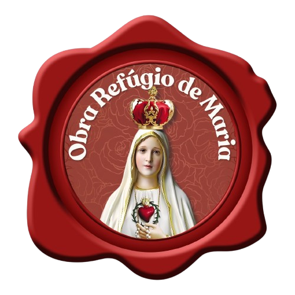
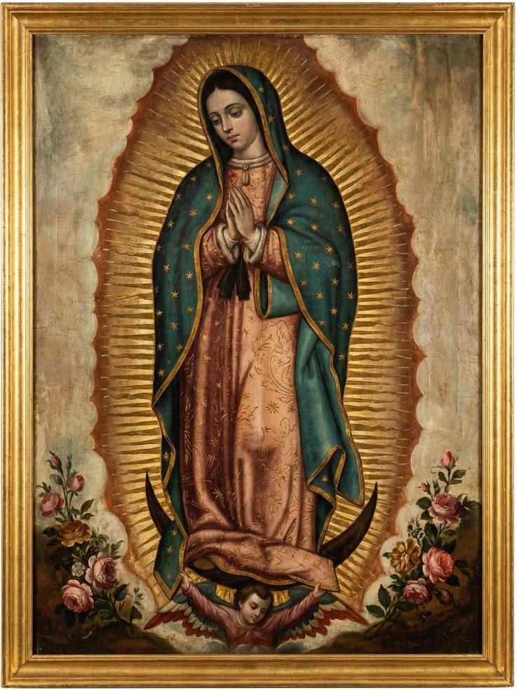
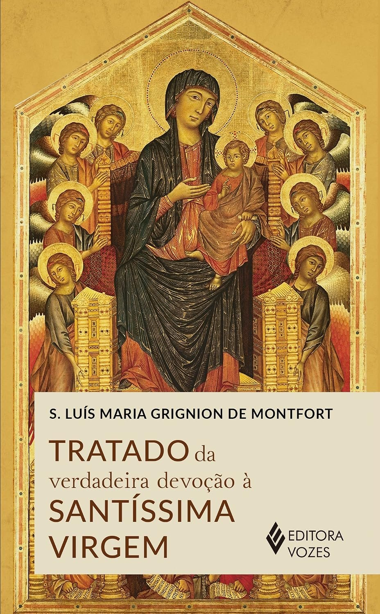
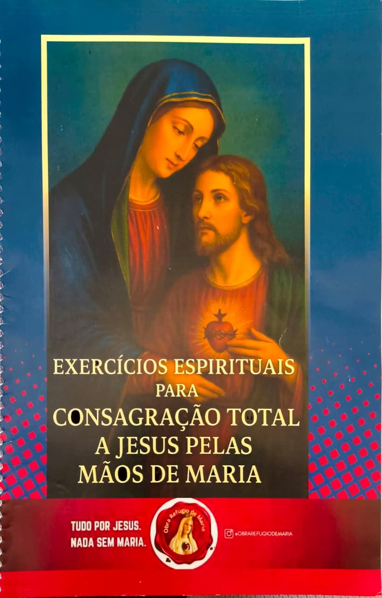

Formação de Consagração · Turma Online
Formações online para reavivar a sua Fé e lhe ajudar a se preparar bem para entregar seu coração à Virgem Maria.
Consagre-se pelo método de São Luís Maria Grignion de Montfort.
Nossa Senhora de Guadalupe será a sua companhia nessa caminhada.
O Curso de Consagração a Jesus pelas mãos de Maria, promovido pela Comunidade Obra Refúgio de Maria, tem cerca de 2 meses e meio de duração e possui um formato bem simples:

Consagre-se com a preparação da Comunidade Católica que já formou mais de 10 mil consagrados a Jesus pelas Mãos de Maria.
Quero fazer parte desse exércitoFaça sua inscrição.
Entre para o grupo exclusivo.
Participe das lives semanais.
Durante as formações, faça a leitura do Tratado da Verdadeira Devoção e os 30 dias de Exercícios Espirituais, sempre com nosso acompanhamento.
Prepare-se espiritualmente para o dia da Consagração.
Consagre-se no dia de Nossa Senhora de Guadalupe (12 de dezembro).
A Consagração é feita individualmente, em sua paróquia ou comunidade. Mas, não se preocupe! Daremos todas as orientações necessárias para viver esse momento belo e marcante em sua vida.
Durante o curso, dois livros serão essenciais para te ajudar a se preparar:

Escrito por São Luís Maria Grignion de Montfort, sua leitura é essencial para todos que desejam fazer sua total Consagração a Jesus pelas mãos de Maria.

Livro com meditações e orações para cada um dos dias de preparação que antecedem a Consagração.
Você pode adquirir todos os livros conosco.
Queremos ajudar você a conhecer profundamente o Imaculado Coração de Maria e a viver como um(a) verdadeiro(a) consagrado(a), reavivando a sua vida de Fé com nossas formações especiais!
A Obra Refúgio de Maria é uma comunidade nova criada em 1999 por um grupo de casais católicos consagrados a Nossa Senhora pelo método de São Luís Maria Grignion de Montfort.
Através da entrega dos corações de nossos fundadores, outros milhares foram alcançados, trazendo para dentro do refúgio acolhedor do Imaculado Coração da Virgem Maria muitas almas resgatadas através dos projetos dessa obra.
Com uma Espiritualidade Eucarística, Mariana e Oblata, seus membros vivem sua missionariedade atuando nas paróquias, lugares privilegiados onde se manifesta o reino de Deus e se encontra Cristo Jesus.
Tornar Jesus mais conhecido, amado e servido por meio de Maria, com uma entrega total de vida pela santificação e salvação das almas.
Formação cristã, com Maria, para a renovação da vida de Fé dos batizados.